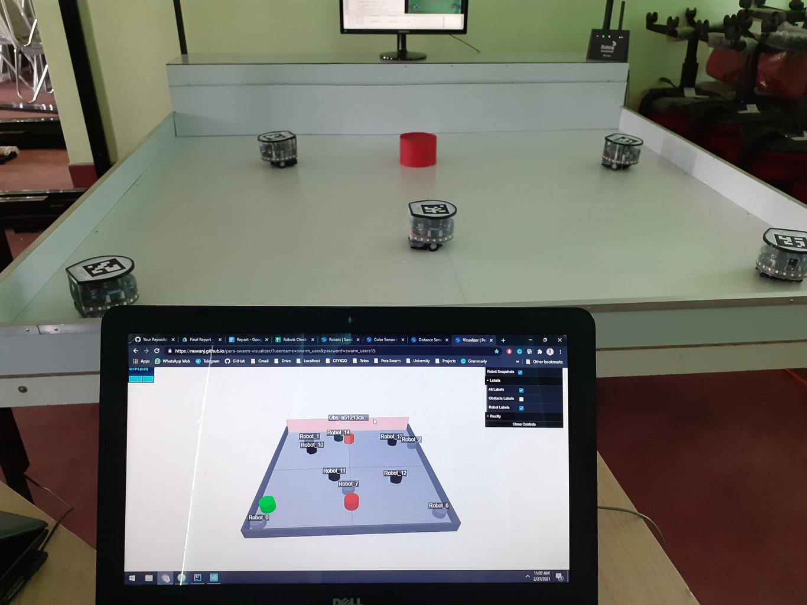
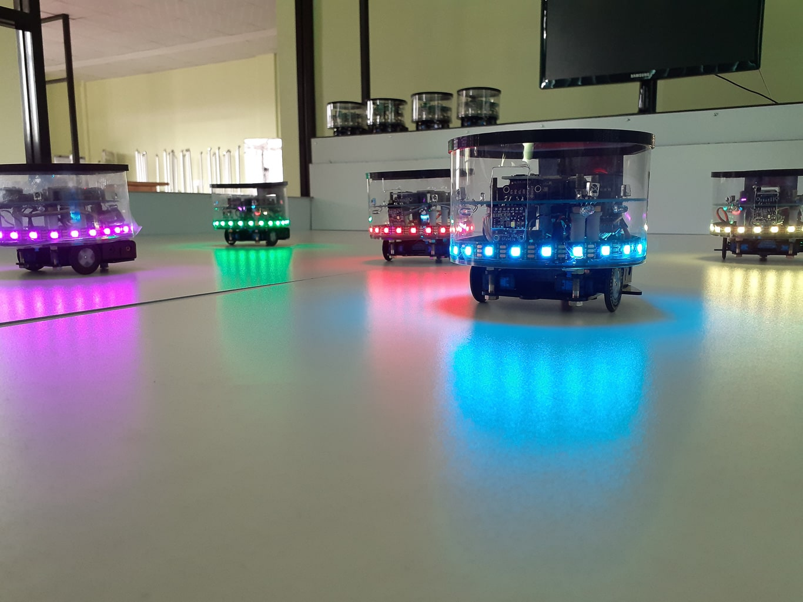
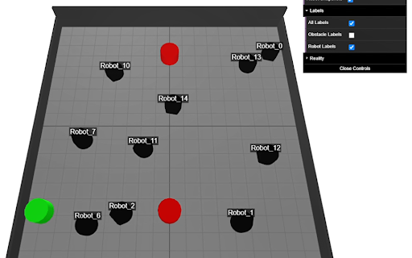

Swarm intelligence is the collective behaviour of decentralized and self-organizing autonomous
agents that cooperate to accomplish complex tasks. This behaviour is inspired by natural systems
such as ant colonies, bee swarms, bird flocks, and other social organisms. This project was
developed to address one of the major challenges in swarm robotics research, which is the high
cost and complexity associated with developing and testing swarm intelligence algorithms using a
large number of physical robots.
The project aims to provide a mixed reality-based simulation platform where physical and virtual
robots coexist within a unified environment. Instead of requiring researchers to build or
purchase large fleets of robots, the platform enables swarm algorithms to be developed, tested,
and evaluated using a combination of real robotic units and virtual agents. This significantly
reduces the hardware required while preserving realistic interactions between robots.
The platform provides a centralized environment for managing swarm experiments by allowing users
to position robots within the simulation arena, execute swarm intelligence algorithms, monitor
robot status, and visualize robot behaviour in real time. It also supports remote
experimentation, enabling researchers to upload their own algorithms, deploy them to the robotic
platform, and observe execution through live data and video feedback. This approach allows
researchers to validate swarm behaviours before deploying algorithms on larger physical robotic
systems.
The project involved developing software modules for robot communication, simulation,
visualization, and synchronization, enabling physical and virtual agents to collaborate within
the same mixed reality environment. The framework was designed to support distributed swarm
intelligence experiments, allowing researchers to evaluate navigation, coordination, formation
control, and cooperative behaviours efficiently before real-world deployment.
The platform demonstrates how mixed reality can bridge the gap between simulation and physical
deployment by providing a scalable and cost-effective environment for swarm robotics research.
Through this project, I gained practical experience in mixed reality technologies, robotics
simulation, distributed systems, real-time communication, and software engineering for
multi-agent robotic applications.
Key Responsibilities
* Designed and developed a user-friendly graphical interface for remotely supervising multiple
autonomous ground robots.
* Implemented real-time command execution to control and coordinate robot movements from a
centralized control panel.
* Developed monitoring features to visualize robot status, connectivity, and operational
information.
* Integrated communication modules enabling reliable interaction between the control application
and distributed robotic units.
* Supported collaborative swarm-robotics experiments by providing centralized monitoring and
coordination capabilities.
* Participated in system integration, testing, debugging, and validation to ensure reliable
operation in real-world environments.
* Collaborated with multidisciplinary teams working on swarm intelligence, robot communication,
and autonomous systems.
* Contributed to improving the usability and scalability of the control platform for research
and educational applications.
Technologies
Java, MQTT, Distributed Systems, Multi-Agent Systems, Robotics, GUI Development, Network
Communication, Git
Gallery



Team
 Dilshani Karunarathna
Dilshani Karunarathna
 Nuwan Jaliyagoda
Nuwan Jaliyagoda
 Pasan Tennakoon
Pasan Tennakoon
Resources/ Links
- Pera Swarm
- Project Blog
- Project Overview Video
- Experiment 1
- Experiment 2
- Repo: Swarm Simulator
- Repo: visualizer
- Repo: localization